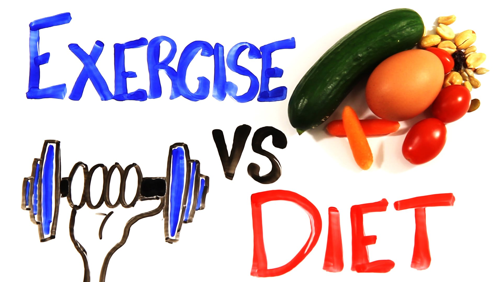

Excercise Tips >> Lose Weight Permanently in 3 Steps
Lose Weight Permanently in 3 Steps

BY REBECCA SLEKMANN
Are you ready for a permanent lifestyle change that will help you lose weight—and keep it off? Though permanent weight loss can be a challenge, it’s by no means impossible.
First, congratulate yourself on making a decision to change, then follow these detailed steps to make your new healthy lifestyle a lasting one.
1. Write down your reasons
Why do you want to lose weight? Whether you want to fit in your favorite clothes again, protect your heart healthy, lower your risk of cancer or disease or simply to feel better, write it down.
Writing down your reasons allows you to re-visit them throughout your journey, especially during your weak moments when you feel overwhelmed and want to quit.
2. Record your starting weight and measurements
Most of us hate the scale, but it is a necessary tool for most. Hop on the scale, write down your weight and record it once every week or every month.
Do not weigh yourself every day. If you don't want to know your number, have someone else record it for you, like your significant other or a trusted friend.
3. Hold yourself accountable
If you lack self-control, join a weight-loss program such as Weight Watchers to help keep you accountable. Having a receptionist weigh you in once per week (and having to pay for it) can keep you honest. Plus, you will get to meet others who are on the same journey.
At Weight Watchers, I learned invaluable tips. For example, we were challenged to sit up straight in our chairs for the entire meeting. This made me realize that I slouched often. Now I am working my core and strengthening my back when I sit.